Airplane Modal Test
This page contains an example demonstrating some usages of SDynPy. In this analysis, we will walk through the entirety of the typical analysis/test/analysis workflow. We will:
Load in the finite element model and use it to select instrumentation locations.
Simulate a modal test on the test article to collect time data
Compute FRFs from the excitation response
Fit modes to the frf data
Compare modal fits to finite element model
Perform finite element expansion using SEREP
Create quicklook reports for the test
Imports
For this project, we will import the following modules, including the SDynPy module.
import numpy as np # Used for numeric calculations
import matplotlib.pyplot as plt # For 2d plotting
import sdynpy as sdpy # Used for structural dynamics features
plt.close('all') # close all plots
Default Plotting Options
Since we will be plotting a lot of shapes, we will set up some options to use
for all geometry plots.
See the documentation for
sdpy.Geometry.plot
for these options. We will create a dictionary of these options so they can
be passed into the various plotting functions using the **kwargs syntax,
or into the various plotting functions that accept a plot_kwargs argument.
plot_options = {'node_size':0,'line_width':1,'show_edges':False,
'view_up':[0,1,0]}
Load the Finite Element Model
For complex modal tests, it can be non-trival to select a good set of sensors. Additionally, for test articles with internal geometry, sensor locations may not be accessible once the unit is built up. Therefore, selecting a good initial sensor set can be crucial to the success of a given test. For this reason, many tests begin by using a finite element model to select a set of degrees of freedom. We will follow this path in this example.
Many analyses performed at Sandia National Laboratories use the
Exodus file format to store
output data. We can load in an Exodus file into SDynPy using the
sdpy.Exodus class. Additionally,
we can reduce the size of the finite element model by reducing it to just the
outer surfaces using
sdpy.Exodus.reduce_to_surfaces,
which returns a
sdpy.ExodusInMemory
object. This is a resonable step to take, as we will not be able to put any
sensors on the interior of material volumes.
# Define the filename of our finite element model
filename = 'airplane-out.exo'
# Load the finite element model and reduce it to just exterior surfaces
exo = sdpy.Exodus(filename)
fexo = exo.reduce_to_surfaces()
Convert Finite Element Model to SDynPy Objects
At this point, we would like to convert our finite element model into SDynPy
objects to make it easier to work with. We will create both a
Geometry as well as
Shapes.
Creating a Geometry from an Exodus file
Our goal is to create a test geometry. We will note that, while finite element models are often defined exclusively in a single, global coordinate system, we often cannot place sensors in the global coordinate system if, for example, there are surfaces oblique to the principal directions of the part. We often place sensors directly on the surfaces, so the sensor coordinate system will generally be oriented such that it is aligned with the local surface normal of the location that the sensor is placed.
We will therefore create local coordinate systems to use for sensor selection.
To do this, we use the local=True argument in the
sdpy.geometry.from_exodus
function. We will specify a preferred direction in the nose-wise direction
preferred_local_orientation=[0,0,1].
The secondary preferred direction will be “up”
secondary_preferred_local_orientation=[0,1,0].
geometry = sdpy.geometry.from_exodus(fexo,local=True,
preferred_local_orientation=[0,0,1],
secondary_preferred_local_orientation=[0,1,0])
Exploring the Geometry object
Take a moment here to explore the
Geometry object. If we
simply type geometry into the IPython console after running the previous
command, we get out the representation of the
Geometry object (truncated
here to save space)
In [1]: geometry
Out[1]:
Node
Index, ID, X, Y, Z, DefCS, DisCS
(0,), 1, 0.496, -0.062, -7.000, 20497, 1
(1,), 2, 0.500, 0.000, -7.000, 20497, 2
(2,), 3, -0.496, -0.062, -7.000, 20497, 3
(3,), 4, 0.429, -0.256, -7.000, 20497, 4
(4,), 5, 0.290, -0.407, -7.000, 20497, 5
(5,), 6, 0.103, -0.489, -7.000, 20497, 6
(6,), 7, -0.103, -0.489, -7.000, 20497, 7
(7,), 8, -0.290, -0.407, -7.000, 20497, 8
(8,), 9, -0.429, -0.256, -7.000, 20497, 9
(9,), 10, -0.496, 0.063, -7.000, 20497, 10
.
.
.
Coordinate_system
Index, ID, Name, Color, Type
(0,), 1, Node 1 Disp, 1, Cartesian
(1,), 2, Node 2 Disp, 1, Cartesian
(2,), 3, Node 3 Disp, 1, Cartesian
(3,), 4, Node 4 Disp, 1, Cartesian
(4,), 5, Node 5 Disp, 1, Cartesian
(5,), 6, Node 6 Disp, 1, Cartesian
(6,), 7, Node 7 Disp, 1, Cartesian
(7,), 8, Node 8 Disp, 1, Cartesian
(8,), 9, Node 9 Disp, 1, Cartesian
(9,), 10, Node 10 Disp, 1, Cartesian
.
.
.
Traceline
Index, ID, Description, Color, # Nodes
----------- Empty -------------
Element
Index, ID, Type, Color, # Nodes
(0,), 1, 64, 1, 4
(1,), 2, 64, 1, 4
(2,), 3, 64, 1, 4
(3,), 4, 64, 1, 4
(4,), 5, 64, 1, 4
(5,), 6, 64, 1, 4
(6,), 7, 64, 1, 4
(7,), 8, 64, 1, 4
(8,), 9, 64, 1, 4
(9,), 10, 64, 1, 4
.
.
.
We see there are a large number of
nodes,
coordinate systems,
and elements, but no
tracelines.
We can access these data by accessing the
Geometry attributes:
geometry.node, geometry.coordinate_system, geometry.element, and
geometry.traceline.
Nodes
We will start with the NodeArray
object revealed by geometry.node. The
NodeArray class is a subclass of
SdynpyArray, which is
itself a subclass of NumPy’s
ndarray.
All subclasses of SdynpyArray
can therefore take advantage of NumPy functions such as intersect1d,
unique, or concatenate and also handle indexing and broadcasting
identically to the NumPy ndarray.
Subclasses of SdynpyArray
store their data internally as a structured array variant of the ndarray.
However, as an alternative to accessing the field data using the syntax
array['fieldname'],
SdynpyArray allows accessing
the fields as if they were attributes using the syntax array.fieldname.
Many integrated development environments will not recognize these attributes
so all SdynpyArray subclasses
have a fields
attribute that lists the fields stored in the array that can be accessed.
Returning to the
geometry.node, we can
identify the fields in the object using the command
In [2]: geometry.node.fields
Out[2]: ('id', 'coordinate', 'color', 'def_cs', 'disp_cs')
Here we see the five fields of the
NodeArray object. We can
obtain even more information about the shape and type of each of these fields
using the dtype attribute, which is inherited from NumPy’s ndarray.
In [3]: geometry.node.dtype
Out[3]: dtype([('id', '<u8'), ('coordinate', '<f8', (3,)), ('color', '<u2'), ('def_cs', '<u8'), ('disp_cs', '<u8')])
Here we see that the geometry.node.id array, which contains the node ID
number, is a 8-byte (64-bit) unsigned integer. The geometry.node.disp_cs
and geometry.node.def_cs arrays, which contain references to the
coordinate system in which the node is defined and in which the node
displaces, respectively, are also this data type. The geometry.node.color
array, while still an unsigned integer, is only 2 bytes, or 16 bits. Finally,
the geometry.node.coordinate, which contains the 3D position of the node
as defined in the geometry.node.def_cs, consists 8-byte (64-bit)
floating-point data, and also has a shape of (3,), which signifies there
are three values of the coordinate for each entry in the geometry.node
array. These extra dimensions of the field arrays are appended at the end of
dimension of the SdynpyArray
subclass. For example, if we compare the shape of the geometry.node array
to the geometry.node.coordinate array, we will see that the shapes are
identical except for the appending of the length-3 extra dimension on the
latter array. Here the shape attribute is also an attribute inherited
from NumPy’s ndarray.
In [4]: geometry.node.shape
Out[4]: (12686,)
In [5]: geometry.node.coordinate.shape
Out[5]: (12686, 3)
We see that the shape of our geometry.node array is 12686, meaning the
geometry we are examining has that many nodes. We then see that the shape of
our geometry.node.coordinate array is 12686 x 3, showing that there are
three coordinate values for each node.
Coordinate Systems
Coordinate systems in the
Geometry object are stored
in a
CoordinateSystemArray
object that can be accessed by geometry.coordinate_system. We will again
explore the fields of the
CoordinateSystemArray
using the dtype.
In [6]: geometry.coordinate_system.dtype
Out[6]: dtype([('id', '<u8'), ('name', '<U40'), ('color', '<u2'), ('cs_type', '<u2'), ('matrix', '<f8', (4, 3))])
We now see some new types of fields. We still have id and color,
which are consistent with the
NodeArray object we
previously explored. We now have another integer field cs_type which
stores the type of coordinate system (0 - cartesian, 1 - cylindrical,
2 - spherical) in a 16-bit unsigned integer field. We also have a name
field, which stores a name of the coordinate system in a string of less than
40 characters. Finally, there is the coordinate system’s transformation matrix,
stored in the matrix field, which is stored in a 4 x 3 array of 64-bit
floating point numbers. Again, recall the shape of the fields are appended to
the shape of the base object, so comparing the shape of the
CoordinateSystemArray
to the shape of its matrix field, we will see that the latter has 2 extra
dimensions of length 4 and 3.
In [7]: geometry.coordinate_system.shape
Out[7]: (12687,)
In [8]: geometry.coordinate_system.matrix.shape
Out[8]: (12687, 4, 3)
Elements
Elements in the
Geometry are stored in an
ElementArray object, which
can be accessed using the geometry.element attribute. The fields of this
object are
In [9]: geometry.element.dtype
Out[9]: dtype([('id', '<u8'), ('type', 'u1'), ('color', '<u2'), ('connectivity', 'O')])
Like NodeArray and
CoordinateSystemArray
objects, the ElementArray
object also has id and color fields. Each element also has a type
field, which is an 8-bit unsigned integer representing the element type as
defined by the universal file format dataset 2412. Finally, the element
connectivity field is stored as an object array, where each entry in the
element array is a NumPy ndarray with length equal to the number of nodes
in the element. This construction is necessary as each element might have a
different number of nodes, so a single array of fixed size is not possible.
Tracelines
The final visualization tool in the
Geometry object is the
TracelineArray,
which represents a line connecting nodes in the geometry. The fields of the
TracelineArray object
are
In [10]: geometry.traceline.dtype
Out[10]: dtype([('id', '<u8'), ('color', '<u2'), ('description', '<U40'), ('connectivity', 'O')])
Similarly to the other geometry objects,
TracelineArray objects
have id and color, and like to the
ElementArray object, it
has a connectivity array that specifies the node IDs to connect with the
line. The description field stores a name or description of each item in
the TracelineArray as
a string with less than 40 characters.
Visualizing Degrees of Freedom on a Geometry
Now that we have an understanding of our
Geometry object, we would
like to visualize it. In particular, we would like to visualize the local
coordinate systems in the geometry to verify that they were created correctly.
To do this, we will create a
CoordinateArray
object, which contains a set of nodes and directions. Since we would like to
generate a coordinate system triad for each node, we will use the helper
function
from_nodelist
which creates degrees of freedom for all directions for each node passed in
as an argument. Here we will use the entire list of node ID numbers from our
geometry.
coordinates = sdpy.coordinate.from_nodelist(geometry.node.id)
Coordinates
Here again is a good place to explore what makes up a
CoordinateArray
object, which we have just assigned to the variable coordinates. We can
examine the data type of the
CoordinateArray
to see that it contains fields for a 64-bit unsigned integer as the node
field and an 8-bit signed integer for the direction field.
In [11]: coordinates.dtype
Out[11]: dtype([('node', '<u8'), ('direction', 'i1')])
CoordinateArray
objects store the direction as an integer where rotations are encoded:
Direction |
Integer Encoding |
|---|---|
X+ |
1 |
Y+ |
2 |
Z+ |
3 |
RX+ |
4 |
RY+ |
5 |
RZ+ |
6 |
X- |
-1 |
Y- |
-2 |
Z- |
-3 |
RX- |
-4 |
RY- |
-5 |
RZ- |
-6 |
None |
0 |
When we want to read
CoordinateArray
objects, the integer directions are typically transformed into the more
readable direction strings shown in the first column of the above table. For
example, if we type coordinates into the console, the representation of the
object displays the string array version of the coordinates.
In [12]: coordinates
Out[12]:
array(['1X+', '1Y+', '1Z+', ..., '20496X+', '20496Y+', '20496Z+'],
dtype='<U7')
From the above, we can see that the coordinate variable we just created
contains a degree of freedom for each of the positive X, Y, Z directions at
each node.
Many SDynPy objects allow indexing with a
CoordinateArray
object to automatically handle the bookkeeping aspect of selecting the right
data for each coordinate.
Plotting Coordinates
At this point, we would like to plot our coordinates on top of our geometry.
For this we use the
plot_coordinate
method of the Geometry object.
plotter = geometry.plot_coordinate(coordinates,arrow_scale=0.005,
plot_kwargs=plot_options)
Note that due to the density of the mesh, we had to make the arrow_scale
much smaller than the default. Here also note that we passed the previously
defined plot_options into the plot_kwargs argument. This method should
produce a graphic similar to the one shown below.

If we zoom into the coordinate systems on the figure, we see that the Z+ (blue)
direction is always oriented perpendicular to the surface, and the X+ (red)
direction is always oriented towards the direction specified by the
preferred_local_orientation argument to the
sdpy.geometry.from_exodus
function, which was the global Z+ direction.
{kind=link}
Creating Shapes from an Exodus File
We just finished extracting geometry with local coordinate systems. We will
now extract shapes from the
sdpy.ExodusInMemory
object. To do this, we will use the
sdpy.shape.from_exodus
function. Note that shapes gathered from this function will be in the
global coordinate system, so we will assign the variable a name that denotes
that these are global shapes.
shapes_global = sdpy.shape.from_exodus(fexo)
Shapes
At this point, it is useful to explore briefly the
ShapeArray object in the
IPython console. The data type of the object is:
In [13]: shapes_global.dtype
Out[13]: dtype([('frequency', '<f8'),
('damping', '<f8'),
('coordinate', [('node', '<u8'),
('direction', 'i1')], (38058,)),
('shape_matrix', '<f8', (38058,)),
('modal_mass', '<f8'), ('comment1', '<U80'),
('comment2', '<U80'), ('comment3', '<U80'),
('comment4', '<U80'), ('comment5', '<U80')])
The data type of
ShapeArray objects can change
depending on what type of shape and how many degrees of freedom are in the
shape. frequency and damping fields are stored as 64-bit floating
point numbers with one value per entry in the
ShapeArray. modal_mass
is also stored in the present
ShapeArray, but if the shape
is complex, then the modal mass might also be complex. The shape_matrix
field holds the underlying shape data. It has one entry for every degree of
freedom in the shape, and is represented by a floating point number for
normal modes or a complex number for complex modes. Similarly, the
coordinate field identifies which degree of freedom belongs to which entry
in the shape_matrix field. The coordinate field stores data as
CoordinateArray
objects, and thus has the same data type as
CoordinateArray.
Finally, there are five fields available for comments, which store string data
up to 80 characters which can be used to store any data the user feels is
relevant to the analysis.
One thing to note is that the shape_matrix field, due to the dimension of
the field being appended at the end of the array, will be transposed from the
typical representation of a mode shape matrix (degrees of freedom as rows and
mode indices as columns). The shape_matrix field will instead have the
shape of the ShapeArray
object itself as its first dimensions, and then the size of the coordinate
field as its last dimension.
In [14]: shapes_global.shape
Out[14]: (200,)
In [15]: shapes_global.shape_matrix.shape
Out[15]: (200, 38058)
Correcting Negative Frequencies and Array Views versus Copies
One thing to note is that sometimes finite element codes that solve for zero frequency modes can have slight errors that result in small negative natural frequencies. These can, however, cause issues due to stiffness instabilities if, for example, the system is integrated over time. It is easy to set all of these negative natural frequencies to positive natural frequencies.
shapes_global.frequency[shapes_global.frequency < 0] = 0
Note carefully here the order of operations in the above statement. We have a
ShapeArray object containing
our shape data. We then access the frequency field of that
ShapeArray object and index
that array to select only those frequencies that are less than zero and set
them to zero. Note the subtle difference to the following line of code.
shapes_global[shapes_global.frequency < 0].frequency = 0
In the above line of code, we first index our
ShapeArray object to access
only the shapes with frequency less than zero, then access the frequency
field of just those shapes and assign to zero. This seems like it should be
the identical operation, correct? Indeed, both operations return the same
negative frequency values.
In [16]: shapes_global.frequency[shapes_global.frequency < 0]
Out[16]:
array([-6.79983277e-05, -6.35834268e-05, -4.75579236e-05, -2.66030128e-05,
-2.39180665e-05])
In [17]: shapes_global[shapes_global.frequency < 0].frequency
Out[17]:
array([-6.79983277e-05, -6.35834268e-05, -4.75579236e-05, -2.66030128e-05,
-2.39180665e-05])
Experienced users of NumPy should readily identify the subtle difference
between the above two operations, however. In the second, the shapes_global
ShapeArray is indexed by a
logical array (a NumPy ndarray consisting of True and False, True where
the frequency field is less than 0). This will trigger NumPy’s advanced
indexing schemes, which always return a copy of rather than a view into the
underlying data. Therefore, in the second case, what we are looking at is the
frequency field of a copy of our shapes_global variable rather than
the raw data. Similarly, assigning directly to this copy will not change the
data of the original shapes_global variable, as can be demonstrated in the
IPython console.
In [18]: shapes_global[shapes_global.frequency < 0].frequency
Out[18]:
array([-6.79983277e-05, -6.35834268e-05, -4.75579236e-05, -2.66030128e-05,
-2.39180665e-05])
In [19]: shapes_global[shapes_global.frequency < 0].frequency = 0
In [20]: shapes_global[shapes_global.frequency < 0].frequency
Out[20]:
array([-6.79983277e-05, -6.35834268e-05, -4.75579236e-05, -2.66030128e-05,
-2.39180665e-05])
We start by checking that there are negative frequencies, then we assign those frequencies to zero, then check again if there are negative frequencies. Indeed the negative frequencies still exist! Again to reiterate, this is because we have assigned the zero frequencies to a copy of the original object.
The correct way to assign to field data is to do all indexing to the final
target array, which in this case is the frequency field. By doing it this
way, the frequency field that we are referencing is still the same
frequency field from the original shapes_global array, so assigning
to this array will modify the original shapes_global array’s data.
In [21]: shapes_global.frequency[shapes_global.frequency < 0]
Out[21]:
array([-6.79983277e-05, -6.35834268e-05, -4.75579236e-05, -2.66030128e-05,
-2.39180665e-05])
In [22]: shapes_global.frequency[shapes_global.frequency < 0] = 0
In [23]: shapes_global.frequency[shapes_global.frequency < 0]
Out[23]: array([], dtype=float64)
Here we see that if we do the indexing the correct way, after assigning the
frequency field data to zero, there are no remaining negative frequencies
(an empty array is returned).
If the reader does not understand these concepts, they are encouraged to read and understand the NumPy documentation on indexing, otherwise misapplying these nuanced concepts can introduce bugs into analyses performed using SDynPy.
Transforming Shape Coordinate Systems
As mentioned above, the shapes that come from the
sdpy.shape.from_exodus
function are defined in the global cordinate system.
We can see that if we plot the shapes on the geometry we loaded previously
using the
plot_shape method of the
Geometry object, the shapes
do not look right, due to plotting shapes defined using a global coordinate
system onto a geometry defined using local coordinate systems.
For example, the shape below should be a rigid body mode
of the system, but instead appears to be a torsional mode of the system.
plotter = geometry.plot_shape(shapes_global,plot_options)
{kind=link}
What we need to do is transform the global shapes into the local shapes defined
on the geometry. We can do this using the
transform_coordinate_system
method of the ShapeArray object.
This method takes two arguments; the first is a
Geometry object that defines
the coordinate systems that we are transforming “from” and the second is a
Geometry object that defines
the coordinate systems that we are transforming “to”. We already have the “to”
geometry in the form of the local geometry we loaded from the Exodus file.
We therefore only need to create a global geometry corresponding to the global
coordinate system that our shapes are currently defined in to transform “from”.
This is easily done using the
sdpy.geometry.from_exodus
function while not passing in the arguments that specify the local coordinate
systems should be created. Plotting the same coordinates
CoordinateArray on
this new geometry will verify that all node coordinate systems are aligned with
the global coordinate system. We can also plot shapes_global with
geometry_global to verify that the shapes look right.
# Get the global geometry
geometry_global = sdpy.geometry.from_exodus(fexo)
# Plot the coordinates on the global geometry
plotter = geometry_global.plot_coordinate(coordinates,arrow_scale=0.005,
plot_kwargs=plot_options)
# Plot global shapes with global geometry
plotter = geometry_global.plot_shape(shapes_global,plot_options)
{kind=link}
{kind=link}
At this point, we have the requirements to transform coordinate systems. We can now plot the local shapes with the local geometry to verify that the shapes are indeed correct. These shapes should look identical to the above figure even though the underlying data is represented in a different coordinate system.
# Transform shapes to local coordinate systems from global coordinate systems
shapes = shapes_global.transform_coordinate_system(geometry_global, geometry)
# Plot the local shapes on the local geometry to verify
plotter = geometry.plot_shape(shapes,plot_options)
Optimizing Instrumentation for Test
The reason we went through all the trouble to create shapes in local coordinate systems is that these are the coordinate systems in which test instrumentation is generally placed. We will now want to downselect a set of sensors to use in the actual test from a candidate set of instruments.
For this example, we will use the effective independence algorithm implemented in
sdpy.dof.by_effective_independence.
This function starts with a candidate set of degrees of freedom and iteratively
throws away the degrees of freedom with the smallest contribution to the
effective independence of the system. Because there are currently a lot of
nodes in our geometry (12,686), it will take a long time to consider each one
of these locations as a potential sensor in a test. Instead, we will reduce
the candidate set by overlaying a grid of points over the test geometry with
a specified spacing.
We will first compute the maximum, minimum, and range of node positions in the
model to define the grid, and use NumPy’s meshgrid function to assemble the
grid.
# Get the maximum and minimum of each component of the node positions (X,Y,Z)
min_coords = geometry.node.coordinate.min(axis=0)
max_coords = geometry.node.coordinate.max(axis=0)
# Compute the size of the model in each direction
range_coords = max_coords-min_coords
# Specify the grid spacing that we want to use
grid_spacing = 0.25
# Compute the number of points along each direction in the grid
num_grids = np.ceil(range_coords/grid_spacing).astype(int)
# Create the grid in each dimension using linspace
grid_arrays = [np.linspace(min,max,num)
for min,max,num in zip(min_coords,max_coords,num_grids)]
# Use meshgrid to assemble the array grid. Flatten the point dimension and
# transpose so the array has shape (n_points x 3)
grid_points = np.array(np.meshgrid(*grid_arrays,indexing='ij')).reshape(3,-1).T
With the grid points defined, we can now select the nodes in the geometry
closest to these grid points by using the
by_position method
of the NodeArray object.
However, there are points on the grid that are not particularly close to any
node in the geometry (e.g. points above the wing at the level of the tail tip)
so we will further reduce the candidate nodes by only keeping those where the
closest node to a grid position is within the specified grid_spacing.
The NumPy unique function can be used to eliminate repeated nodes if one
node ends up being closest to two grid points.
# Select nodes that are closest to the points in the grid
candidate_nodes = geometry.node.by_position(grid_points)
# Reduce to only nodes that are within one grid spacing of their requested point
candidate_nodes = candidate_nodes[
np.linalg.norm(candidate_nodes.coordinate - grid_points,axis=-1) < grid_spacing]
# Remove duplicates
candidate_node_ids = np.unique(candidate_nodes.id)
At this point we need to create the shape matrix that the effective independence
algorithm will use to downselect degrees of freedom. We will first develop a
CoordinateArray
containing the degrees of freedom of the candidate set. We will use the helper
function sdpy.coordinate_array
to create this set of degrees of freedom, using NumPy’s broadcasting
capabilities to fill out the array.
Here the nodes are the candidate node ids, and the directions are
1, 2, 3 corresponding to X+, Y+, Z+. We pass in a shape
(candidate_node_ids.size x 1) array for the nodes and a shape (3) array for the
direction, which will be broadcast to a (candidate_node_ids.size x 3) array
output where the rows correspond to the node id and the columns correspond to
each direction. For more information on broadcasting, see the NumPy
documentation.
# Create the candidate degree of freedom set
candidate_dofs = sdpy.coordinate_array(candidate_node_ids[:,np.newaxis],[1,2,3])
# Plot the degrees of freedom to verify they were created correctly
geometry.plot_coordinate(candidate_dofs,arrow_scale=0.01,plot_kwargs = plot_options)
{kind=link}
Now that we have selected our candidate degrees of freedom, we need to select our target shapes. Here we will consider the bandwidth of the test plus a bit more to capture some effects of out-of-band modes. We are interested in data up to 200 Hz for this test, so we will consider shapes up to 300 Hz for this instrumentation selection.
# Define the shape bandwidth
shape_bandwidth = 300
# Keep only shapes in the target set that have frequency less than the bandwidth
target_shapes = shapes[shapes.frequency < shape_bandwidth]
Finally, the last definition needed is the number of sensors to keep. In this case, we will want to keep 30 triaxial accelerometers.
# Define the shape bandwidth
sensors_to_keep = 30
At this point it is illustrative to examine what the
sdpy.dof.by_effective_independence.
function wants as its arguments. The first argument is sensors_to_keep,
which is the number we just defined. The second is the shape_matrix.
Reading the documentation, this shape_matrix should have its first dimension
corresponding to each sensor (here a sensor could be a channel or group of
channels for a triaxial accelerometer) and its last dimension correspond to
each target mode. We will therefore want to set up a matrix with shape
(candidate_node_ids.size x 3 x target_shapes.size). This way, the
target shape dimension is last, and the group of channels corresponding to each
sensor is first.
Let’s start setting this up. We already have a shape
(candidate_node_ids.size x 3) candidate_dofs
CoordinateArray.
We can use that coordinate array to index into the target_shapes
ShapeArray.
# Get the shape matrix by indexing the target shapes with our candidate dofs
shape_matrix = target_shapes[candidate_dofs]
Here it is illustrative to examine the sizes of the arrays in this operation in the IPython console.
In [24]: target_shapes.shape
Out[24]: (43,)
In [25]: candidate_dofs.shape
Out[25]: (1217, 3)
In [26]: shape_matrix.shape
Out[26]: (43, 1217, 3)
We see that we started with 43 shapes in our target_shapes array. We then
index into that array with our (1217 x 3) candidate_dofs array. This
selects a (1217 x 3) shape matrix for each of the 43 shapes, resulting in a
final shape_matrix shape of (43 x 1217 x 3). We are almost to the
desired shape of shape_matrix. However, as stated in the documentation, the
mode dimension of the array should be last, and the sensor dimension should be
first. We simply need to move the first axis (index 0 in Python’s 0-based
indexing) to the last index (index -1, where the negative index signifies
counting from the end of the array). We can easily move array axes around
using NumPy’s moveaxis function.
shape_matrix = np.moveaxis(shape_matrix,0,-1)
Now if we re-examine the shape in the IPython console, we see that it is the proper shape.
In [27]: shape_matrix.shape
Out[27]: (1217, 3, 43)
We can now run the sensor selection algorithm using the effective independence
objective function. The sensor selection schemes are contained in
sdpy.dof, and we will use the
sdpy.dof.by_effective_independence
function. We give it our sensors_to_keep and shape_matrix, as well as
give the optional flag to return_efi so we can visualize the effective
independence of the shape matrix as degrees of freedom are removed. We can
plot this function, as well as the kept degrees of freedom by indexing the
oridinal set of degrees of freedom with the keep_indices returned from
the
by_effective_independence
function. Intuitively, the sensors seem well-placed, with many positioned at
the boundaries of the wing and tail, as well as a few on the nose and fuselage.
keep_indices,efi = sdpy.dof.by_effective_independence(
sensors_to_keep, shape_matrix,return_efi=True)
# Plot the effective independence vs dofs
fig,ax = plt.subplots(num='EFI vs DoF')
ax.plot(shape_matrix.shape[0]-np.arange(len(efi)), efi)
ax.set_yscale('log')
ax.set_xlim(ax.get_xlim()[::-1])
ax.set_ylabel('EFI')
ax.set_xlabel('DoF Remaining')
# Plot the kept dofs on the model
keep_dofs = candidate_dofs[keep_indices]
geometry.plot_coordinate(keep_dofs,arrow_scale=0.01,plot_kwargs = plot_options)
{kind=link}
{kind=link}
Creating a Test Geometry
Because the test sensors are a small subset of the nodes on the original
finite element model, it can be useful to add visualization features to the
test geometry to help visualize responses from the test. We have already
explored elements, which our finite element model has in abundance, so for the
test geometry we will use
tracelines
to aid in visualization. We will use the helper function
add_traceline.
The first step in this process is to simply reduce the original geometry down
to our kept sensor locations. using the
reduce method.
This method will discard any coordinate systems, tracelines, or elements that
do not entirely consist of the nodes that are kept, which in this case means
that the geometry will consist of only nodes and their coordinate systems.
# Create a test geometry and shapes to plot on the test geometry
test_geometry = geometry.reduce(np.unique(keep_dofs.node))
In [28]: test_geometry
Out[28]:
Node
Index, ID, X, Y, Z, DefCS, DisCS
(0,), 2796, -0.051, 0.497, -2.562, 20497, 2796
(1,), 5248, -0.095, 0.031, 0.000, 20497, 5248
(2,), 6157, -4.970, 0.310, -2.500, 20497, 6157
(3,), 6172, -1.413, -0.001, -2.500, 20497, 6172
(4,), 6214, -3.989, 0.224, -2.500, 20497, 6214
(5,), 6272, -2.438, -0.037, -2.500, 20497, 6272
(6,), 6376, -4.970, 0.310, -4.000, 20497, 6376
(7,), 6392, -3.989, 0.224, -4.000, 20497, 6392
(8,), 6405, -3.192, 0.155, -4.000, 20497, 6405
(9,), 8143, -1.384, -0.129, -4.000, 20497, 8143
(10,), 8160, -2.438, -0.037, -4.000, 20497, 8160
(11,), 11664, 2.438, -0.037, -2.500, 20497, 11664
(12,), 11705, 4.970, 0.310, -2.500, 20497, 11705
(13,), 11722, 3.989, 0.224, -2.500, 20497, 11722
(14,), 11735, 3.192, 0.155, -2.500, 20497, 11735
(15,), 11764, 1.413, -0.001, -2.500, 20497, 11764
(16,), 11892, 2.438, -0.037, -4.000, 20497, 11892
(17,), 11909, 1.384, -0.129, -4.000, 20497, 11909
(18,), 13603, 4.970, 0.310, -4.000, 20497, 13603
(19,), 13647, 3.192, 0.155, -4.000, 20497, 13647
(20,), 13660, 3.989, 0.224, -4.000, 20497, 13660
(21,), 17107, 2.000, -0.062, -6.000, 20497, 17107
(22,), 17563, 2.000, 0.062, -7.000, 20497, 17563
(23,), 17573, 1.123, 0.062, -7.000, 20497, 17573
(24,), 18331, 0.063, 2.000, -6.000, 20497, 18331
(25,), 18416, 0.063, 1.185, -7.000, 20497, 18416
(26,), 18787, -0.062, 2.000, -7.000, 20497, 18787
(27,), 19579, -2.000, -0.062, -6.000, 20497, 19579
(28,), 19651, -2.000, 0.063, -7.000, 20497, 19651
(29,), 19665, -1.123, 0.063, -7.000, 20497, 19665
Coordinate_system
Index, ID, Name, Color, Type
(0,), 2796, Node 2796 Disp, 1, Cartesian
(1,), 5248, Node 5248 Disp, 1, Cartesian
(2,), 6157, Node 6157 Disp, 1, Cartesian
(3,), 6172, Node 6172 Disp, 1, Cartesian
(4,), 6214, Node 6214 Disp, 1, Cartesian
(5,), 6272, Node 6272 Disp, 1, Cartesian
(6,), 6376, Node 6376 Disp, 1, Cartesian
(7,), 6392, Node 6392 Disp, 1, Cartesian
(8,), 6405, Node 6405 Disp, 1, Cartesian
(9,), 8143, Node 8143 Disp, 1, Cartesian
(10,), 8160, Node 8160 Disp, 1, Cartesian
(11,), 11664, Node 11664 Disp, 1, Cartesian
(12,), 11705, Node 11705 Disp, 1, Cartesian
(13,), 11722, Node 11722 Disp, 1, Cartesian
(14,), 11735, Node 11735 Disp, 1, Cartesian
(15,), 11764, Node 11764 Disp, 1, Cartesian
(16,), 11892, Node 11892 Disp, 1, Cartesian
(17,), 11909, Node 11909 Disp, 1, Cartesian
(18,), 13603, Node 13603 Disp, 1, Cartesian
(19,), 13647, Node 13647 Disp, 1, Cartesian
(20,), 13660, Node 13660 Disp, 1, Cartesian
(21,), 17107, Node 17107 Disp, 1, Cartesian
(22,), 17563, Node 17563 Disp, 1, Cartesian
(23,), 17573, Node 17573 Disp, 1, Cartesian
(24,), 18331, Node 18331 Disp, 1, Cartesian
(25,), 18416, Node 18416 Disp, 1, Cartesian
(26,), 18787, Node 18787 Disp, 1, Cartesian
(27,), 19579, Node 19579 Disp, 1, Cartesian
(28,), 19651, Node 19651 Disp, 1, Cartesian
(29,), 19665, Node 19665 Disp, 1, Cartesian
(30,), 20497, Global, 1, Cartesian
Traceline
Index, ID, Description, Color, # Nodes
----------- Empty -------------
Element
Index, ID, Type, Color, # Nodes
----------- Empty -------------
At this point, we would like to connect the nodes with tracelines. We can
plot the kept sensor degrees of freedom on the reduced test_geometry, and
specify label_dofs=True to create labels at each of the coordinates. This
will allow us to easily see which nodes should be connected.
# Let's plot the coordinates with the dofs labeled to aid us in creating the
# tracelines
test_geometry.plot_coordinate(keep_dofs,arrow_scale=0.02,label_dofs=True)
{kind=link}
With the points labeled, it is easy to see which nodes should be connected using
tracelines. When we create tracelines, we will also set the colors, using
color=1 (blue) for the fuselage, color=7 (green) for the wings, and
color=13 (pink) for the tail. After the tracelines are added, it is much
easier to visualize the structure of the airplane.
# Fuselage
test_geometry.add_traceline([5248,2796],color=1)
# Wings
test_geometry.add_traceline([6172,6272,6214,6157,6376,6392,6405,8160,8143,6172],color=7)
test_geometry.add_traceline([11909,11892,13647,13660,13603,11705,11722,11735,11664,11764,11909],color=7)
# Tail
test_geometry.add_traceline([19579,19651,19665,19579],color=13)
test_geometry.add_traceline([17573,17563,17107,17573],color=13)
test_geometry.add_traceline([18787,18416,18331,18787],color=13)
# Now plot the geometry to see the tracelines
test_geometry.plot_coordinate(keep_dofs,arrow_scale=0.02,label_dofs=True,plot_kwargs=plot_options)
{kind=link}
It is also useful to reduce the shapes down to the test degrees of freedom,
which we can do using the
ShapeArray.reduce method,
and we will need to specify a damping value (here 2% is used) as there is no
damping in the finite element model. We can then plot our test shapes on our
test geometry to make sure everything looks right. We can look at the
Modal Assurance Criterion matrix of our reduced set of shapes to
ensure that we can distinguish the shapes from the test sensors. The MAC
can be computed with the
ShapeArray.mac function, and the
matrix can be plotted nicely using the
sdpy.correlation.matrix_plot
function.
# Now get the test shapes by reducing the target shapes to the test dofs
test_shapes = target_shapes.reduce(keep_dofs.flatten())
# We'll need to add damping to the model too
test_shapes.damping=0.02
# Plot the geometry to see what it looks like
test_geometry.plot_shape(test_shapes,plot_options)
# Look at the mac for the target shapes with our set of degrees of freedom
sdpy.correlation.matrix_plot(sdpy.shape.mac(test_shapes),text_size = 8)
{kind=link}
{kind=link}
OOPS! An Instrumentation Error!
Installing instrumentation is a tedious process that must be well-documented for success of a given test. For large channel-count tests, it is almost inevitable that there will be some kind of sensor or geometry error, so it is useful to develop workflows to verify that sensors are oriented correctly. Here we will purposefully introduce an instrumentation error by setting the displacement coordinate system of one of our sensors to the global coordinate system rather than its correct local coordinate system. We will then investigate a workflow in SDynPy for identifying correcting this error.
# Copy the geometry so we don't overwrite our correct version
test_geometry_error = test_geometry.copy()
# Change the displacement coordinate system of the 5th node to the global
# coordinate system
test_geometry_error.node.disp_cs[4] = test_geometry_error.coordinate_system.id[-1]
Running a Virtual Experiment: Rigid Body Checkouts
One approach to validating the test geometry and channel table is to perform rigid body checks, where the structure is excited at a frequency well below the elastic modes of the system to elicit a rigid body response. These response shapes can be visualized on the geometry and should appear rigid. If, for example, a sensor is moving out of phase with the rest of the sensors, it is fairly certain there is an instrumentation or bookkeeping error. When looking at acceleration response, these rigid shapes should also have very small imaginary parts compared to their real parts. Finally, a projector can be used to project the measured rigid body shapes through analytic rigid body shapes created from the test geometry. This operation will remove any “non-rigid” components of the measured shapes. By subtracting this “rigidized” version from the measured shapes, a residual can be created where large values in the residual point to non-rigid motions.
Creating a System Object to Integrate
We will now simulate one of these rigid body tests by integrating equations of
motion. SDynPy uses System
objects to represent dynamical systems.
System objects contain mass,
stiffness, and damping matrices. They also can contain a transformation matrix
to return to physical coordinates if the internal state degrees of freedom are
represented in a reduced space (for example, a mode shape matrix is the
transformation between modal mass, stiffness, and damping matrices and the
corresponding physical coordinates).
System objects also contain
a coordinate
to aid in bookkeeping.
We can easily create a modal System
from our existing shapes by using the
ShapeArray.system method.
This will return a state matrix in modal space. We can use the
System.spy method to visualize
the structure of the created system.
# Create a System from the test shapes
test_system = test_shapes.system()
# Look at the structure of the System object
test_system.spy()
{kind=link}
We can see from the above matrix plot that the internal state is diagonal, consisting of 43 modal degrees of freedom, whereas the transformation matrices (which are the mode shape matrices in this case) are full, consisting of 90 physical degrees of freedom.
Exploring the System Object
Here is a good place to take time to investigate the
System
object we have just created. We can look at the mass, stiffness, and
damping attributes to see those matrices, and verify that they are indeed
diagonal for the modal system we have created.
In [29]: test_system.mass
Out[29]:
array([[1., 0., 0., ..., 0., 0., 0.],
[0., 1., 0., ..., 0., 0., 0.],
[0., 0., 1., ..., 0., 0., 0.],
...,
[0., 0., 0., ..., 1., 0., 0.],
[0., 0., 0., ..., 0., 1., 0.],
[0., 0., 0., ..., 0., 0., 1.]])
In [30]: test_system.stiffness
Out[30]:
array([[ 0. , 0. , 0. , ...,
0. , 0. , 0. ],
[ 0. , 0. , 0. , ...,
0. , 0. , 0. ],
[ 0. , 0. , 0. , ...,
0. , 0. , 0. ],
...,
[ 0. , 0. , 0. , ...,
2868905.99964993, 0. , 0. ],
[ 0. , 0. , 0. , ...,
0. , 3210105.88194563, 0. ],
[ 0. , 0. , 0. , ...,
0. , 0. , 3289727.48791008]])
In [31]: test_system.damping
Out[31]:
array([[ 0. , 0. , 0. , ..., 0. ,
0. , 0. ],
[ 0. , 0. , 0. , ..., 0. ,
0. , 0. ],
[ 0. , 0. , 0. , ..., 0. ,
0. , 0. ],
...,
[ 0. , 0. , 0. , ..., 67.75138079,
0. , 0. ],
[ 0. , 0. , 0. , ..., 0. ,
71.66707341, 0. ],
[ 0. , 0. , 0. , ..., 0. ,
0. , 72.55042371]])
We can also look at the transformation and coordinate to see
that the bookkeeping from internal state (modal) degree of freedom to
physical degree of freedom is maintained.
In [32]: test_system.transformation
Out[32]:
array([[-2.76026978e-03, -1.40194807e-03, 4.58617331e-03, ...,
1.73749203e-03, -3.09022372e-04, -1.68270938e-05],
[ 6.53050658e-04, -5.80137822e-04, -2.07032636e-03, ...,
1.46528917e-04, 6.02431820e-04, -5.76349533e-03],
[ 1.69407153e-03, 3.83686628e-04, -7.59999135e-04, ...,
5.49012119e-04, 2.74121905e-03, 2.04985114e-04],
...,
[-8.55739072e-03, 8.65502669e-04, 9.38297408e-04, ...,
1.34896916e-02, 3.71546727e-03, 1.47339469e-03],
[-4.93925263e-05, -8.19915019e-03, -2.66942214e-03, ...,
2.39905468e-03, -1.48742295e-05, -2.91024169e-05],
[-6.55791597e-03, 3.30305914e-04, -6.16004354e-03, ...,
1.31560277e-02, 3.15253196e-03, 1.19728196e-03]])
In [33]: test_system.coordinate
Out[33]:
coordinate_array(string_array=
array(['2796X+', '2796Y+', '2796Z+', '5248X+', '5248Y+', '5248Z+',
'6157X+', '6157Y+', '6157Z+', '6172X+', '6172Y+', '6172Z+',
'6214X+', '6214Y+', '6214Z+', '6272X+', '6272Y+', '6272Z+',
'6376X+', '6376Y+', '6376Z+', '6392X+', '6392Y+', '6392Z+',
'6405X+', '6405Y+', '6405Z+', '8143X+', '8143Y+', '8143Z+',
'8160X+', '8160Y+', '8160Z+', '11664X+', '11664Y+', '11664Z+',
'11705X+', '11705Y+', '11705Z+', '11722X+', '11722Y+', '11722Z+',
'11735X+', '11735Y+', '11735Z+', '11764X+', '11764Y+', '11764Z+',
'11892X+', '11892Y+', '11892Z+', '11909X+', '11909Y+', '11909Z+',
'13603X+', '13603Y+', '13603Z+', '13647X+', '13647Y+', '13647Z+',
'13660X+', '13660Y+', '13660Z+', '17107X+', '17107Y+', '17107Z+',
'17563X+', '17563Y+', '17563Z+', '17573X+', '17573Y+', '17573Z+',
'18331X+', '18331Y+', '18331Z+', '18416X+', '18416Y+', '18416Z+',
'18787X+', '18787Y+', '18787Z+', '19579X+', '19579Y+', '19579Z+',
'19651X+', '19651Y+', '19651Z+', '19665X+', '19665Y+', '19665Z+'],
dtype='<U7'))
Setting up the Integration and Forcing Function
We aim integrate our test_system using the
System.time_integrate
method, but first we need to set up its required
sampling parameters. We will specify our test bandwidth, as well as an
integration oversample factor to ensure that the integration is performed
accurately.
System objects represent Linear,
Time-Invariant systems, so the
scipy.signal.lsim
function is used for integration within the
System.time_integrate
function, and this typically only requires a factor of 10x the desired
sampling rate to achieve reasonable results. We will also define the desired
frequency spacing for the test. The other sampling parameters can be
derived from these definitions. We will measure 10 frames so averaging
can be performed when computing frequency response functions.
# First let's set up our general sampling parameters for our test.
test_bandwidth = 200 # Hz
integration_oversample = 10 #x
sample_rate = test_bandwidth*2*integration_oversample
dt = 1/sample_rate
df = 0.125 # Hz
samples_per_frame = int(sample_rate/df)
rb_frames = 10
We will now create the forcing function for our rigid body test, which will be
a sine wave. The first elastic mode of the test article is near 6 Hz, so we
choose a frequency that is much lower than that value. We can then use the
sdpy.generator.sine
function to produce a sine wave with the proper sampling parameters.
# Now we will create a sine signal that we can use for rigid body checkouts
rb_frequency = 0.5 # Hz
force = sdpy.generator.sine(rb_frequency, dt, samples_per_frame*rb_frames)
# Plot the sine wave to make sure it is correct
fig,ax = plt.subplots(num='Sine Force Signal')
ax.plot(np.arange(samples_per_frame*rb_frames)*dt,force)
{kind=link}
Finally, we will chose the coordinates at which we will excite the structure. We can examine our previous plots of the labeled test geometry to identify degrees of freedom that are approximately through the center of gravity of the structure, which will result in approximately translational motions.
# To run the rigid body tests, we select degrees of freedom approximately
# through the CG of the part.
rb_coordinates = sdpy.coordinate_array(string_array=['2796Z+','11722Y+','2796X+'])
Running the Integration to Generate Synthetic Test Data
We will now loop through each of our excitation degrees of freedom and integrate
the System’s response to the force located at that position using
System.time_integrate.
This will give us references and responses as
TimeHistoryArray objects.
We will then truncate off the first second of the response in order to remove
the startup transients from the data using
TimeHistoryArray.extract_elements_by_abscissa.
We will then pass the truncated data into the
sdpy.TransferFunctionArray.from_time_data
function to produce frequency response functions as a
TransferFunctionArray
object. Once the frequency response functions are computed, we can query the
ordinate field of the
TransferFunctionArray
to get the deflection shape, which we will store into a
ShapeArray object using the
sdpy.shape_array helper
function. We append each shape to a running list, and then concatenate all the
shapes into one ShapeArray
object, which we can plot on our erroneous geometry.
# Create a list to hold our shapes
rb_shapes = []
# Loop through each of our excitation locations
for rb_coordinate in rb_coordinates:
# Perform time integration to get the responses to our sine wave
print('Integrating Rigid Body Excitation at {:}'.format(str(rb_coordinate)))
references = sdpy.time_history_array(
abscissa = np.arange(force.shape[-1])*dt,
ordinate = force,
coordinate = rb_coordinate)
responses = test_system.time_integrate(
forces = references,
responses = {2:test_system.coordinate} # key of 2 is for acceleration
)
# Plot the responses and references
fig,ax = plt.subplots(2,1,sharex=True,
num='Rigid Body Test {:}'.format(str(rb_coordinate)))
responses.plot(ax[0])
ax[0].set_ylabel('Acceleration')
references.plot(ax[1])
ax[1].set_ylabel('Force')
# Truncate the initial portions of the functions so we eliminate the
# transient portion of the response
responses = responses.extract_elements_by_abscissa(1,np.inf)
references = references.extract_elements_by_abscissa(1,np.inf)
# Now we want to create an FRF from the references and responses
frf = sdpy.TransferFunctionArray.from_time_data(references,responses,samples_per_frame)
# Now we want to get the value at our frequency line because the rest will
# be noise
frequency_index = np.argmin(abs(frf[0,0].abscissa - rb_frequency))
shape_matrix = frf.ordinate[...,frequency_index]
# Now let's create a shapearray object so we can plot the shapes
rb_shape = sdpy.shape_array(frf[:,0].response_coordinate,shape_matrix.T,
rb_frequency,comment1=str(rb_coordinate))
rb_shapes.append(rb_shape)
# Combine all rb_shapes into one shape array
rb_shapes = np.concatenate(rb_shapes)
# Now let's plot those shapes on our (incorrect) geometry
test_geometry_error.plot_shape(rb_shapes,plot_options)
Throughout the above code, the responses and reference signal were plotted; a representative figure is shown below, showing the sinusoidal response of the system at the requested degrees of freedom.
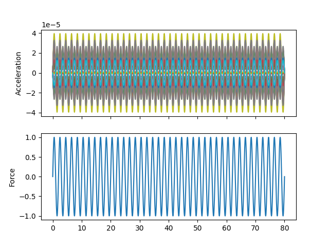{kind=link}
When we plot the measured rigid shapes against the geometry where we intentionally introduce errors, we see that one of the sensors on the wing seems to be moving opposite the rest of the wing. We will investigate this more thoroughly in a moment.
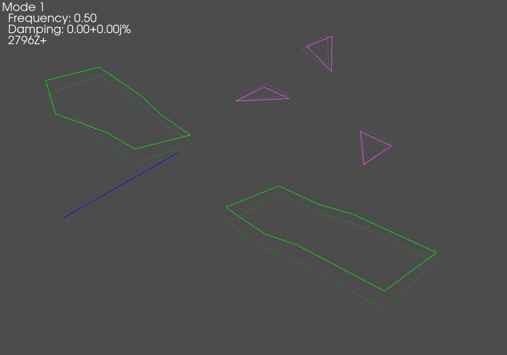{kind=link}
Exploring Time Data Objects
Before we move on to analyzing the rigid body datasets, we will first take some
time to explore some of the data objects that we have created. Namely, we
generated some
TimeHistoryArray objects
and a
TransferFunctionArray
object for each excitation degree of freedom.
In SDynPy, all data objects inherit from the
NDDataArray class, which
represents a general, multi-dimensional data container. This class, in turn,
inherits from the SdynpyArray,
so all the broadcasting and attribute access features are available as well.
We will start by examining responses from the previous block of code. We
see that it is a
TimeHistoryArray object.
We can look at its dtype to see what data it contains.
In [34]: responses
Out[34]: TimeHistoryArray with shape 90 and 316000 elements per function
In [35]: responses.dtype
Out[35]: dtype([('abscissa', '<f4', (316000,)),
('ordinate', '<f8', (316000,)),
('comment1', '<U80'),
('comment2', '<U80'),
('comment3', '<U80'),
('comment4', '<U80'),
('comment5', '<U80'),
('coordinate',
[('node', '<u8'), ('direction', 'i1')],
(1,))
])
Being a TimeHistoryArray
object, responses consists of real data. It has floating point abscissa
and ordinate fields to contain the independent time and dependent response
variables, respectively. Note that the abscissa and ordinate fields
have the size of the length of the data record; in this case, it the time
data consists of 316,000 samples. It also has five 80-character string fields
where comments can be stored. Finally, it has a coordinate field that stores
the degree of freedom information for each data record. Note the rather
peculiar length 1 on the coordinate field. This is to signify that a time
history signal can be considered a 1D data array, which we will see is contrary
to, for example,
TransferFunctionArray
objects which are 2D, having both a response (output) coordinate and a reference
(input) coordinate. Again, remember that these extra dimensions are appended
to the TimeHistoryArray
dimensions.
In [35]: responses.shape
Out[35]: (90,)
In [36]: responses.ordinate.shape
Out[36]: (90, 316000)
In [37]: responses.coordinate.shape
Out[37]: (90, 1)
Consider the previous object in contrast to the frf variable, which is a
TransferFunctionArray
object.
In [38]: frf
Out[38]: TransferFunctionArray with shape 90 x 1 and 16000 elements per function
In [39]: frf.dtype
Out[39]: dtype([('abscissa', '<f4', (16000,)),
('ordinate', '<c16', (16000,)),
('comment1', '<U80'),
('comment2', '<U80'),
('comment3', '<U80'),
('comment4', '<U80'),
('comment5', '<U80'),
('coordinate',
[('node', '<u8'), ('direction', 'i1')],
(2,))
])
TransferFunctionArray
has all the same fields as
TimeHistoryArray,
except they are different shapes and types. Because frequency response data
is complex, the ordinate field is now a 16-byte complex number rather than
an 8-byte floating point number. Similarly, because there are now reference
and response coordinates associated with each data record, the length of the
coordinate field is now 2.
Identifying Bad Geometry with Rigid Body Checkouts in SDynPy
Now that we’ve understood the data objects a bit better, we can return to the task at hand, which is to sort out our geometry and channel table, which has an intentionally incorrect sensor.
SDynPy has some built-in tools for doing rigid body checkouts, plotting the
complex plane and the residual discussed previously. These are contained in
the sdpy.shape.rigid_body_check
function. Simply give the function the geometry and shapes, and it will
attempt to figure out which nodes are suspicious and warrant further
investigation.
# It looks like there is an error in the shapes (go figure!). Let's perform
# a more quantitative analysis on the shapes to see what is wrong
suspicious_dofs = sdpy.shape.rigid_body_check(
test_geometry_error, rb_shapes)
We can see on the complex plane plots that the imaginary part is significantly smaller than the real part, meaning we are well away from elastic modes and all of our gauges have the correct phase. The residual plot immediately highlights the sensors that are not behaving like they should, which allows the test engineer to hone in on that sensor to figure out what is wrong.
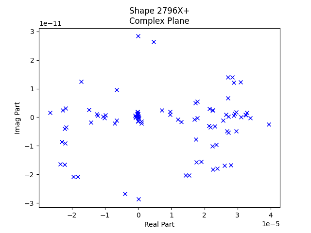 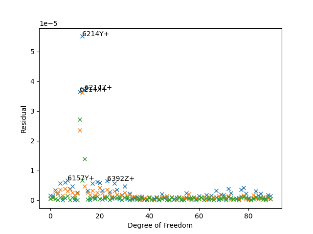{kind=link}
{kind=link}
While the example problem shown here only has external sensors, many times
internal sensors may be suspicious, and without access to them, it can be
difficult to investigate the potential incorrect orientations of the sensors.
For this reason, SDynPy includes an approach to identify the “best” orientation
of the sensor using the
sdpy.shape.rigid_body_fix_node_orientation
function. If we give this function a geometry, a set of rigid shapes, and a
list of suspicious nodes, it will attempt to find the correct orientation of
of the sensors at the suspicious nodes.
# Let's see if we can't let SDynPy figure out the correct orientation for that
# sensor in the geometry given the data.
suspicious_nodes = np.unique(suspicious_dofs.node)
test_geometry_corrected = sdpy.shape.rigid_body_fix_node_orientation(
test_geometry_error, rb_shapes,suspicious_nodes)
# Let's see what the fix looks like compared to the way the sensor is actually
# oriented
test_geometry_error.plot_coordinate(
sdpy.coordinate.from_nodelist(suspicious_nodes),label_dofs=True,
plot_kwargs=plot_options)
test_geometry_corrected.plot_coordinate(
sdpy.coordinate.from_nodelist(suspicious_nodes),label_dofs=True,
plot_kwargs=plot_options)
test_geometry.plot_coordinate(
sdpy.coordinate.from_nodelist(suspicious_nodes),label_dofs=True,
plot_kwargs=plot_options)
# Plot the rigid shapes on the corrected geometry
test_geometry_corrected.plot_shape(rb_shapes,plot_options)
We see that when we plotted the coordinate systems, SDynPy was able to take the initial erroneous coordinate system (left) and correct it (center) so that it matched the original coordinate system (right) that we had before we introduced the instrumentation error.
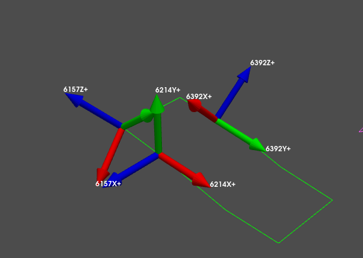 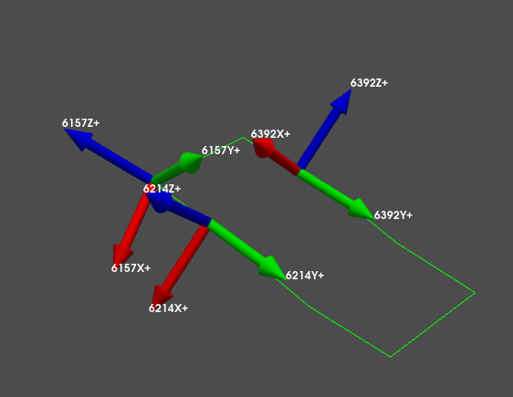 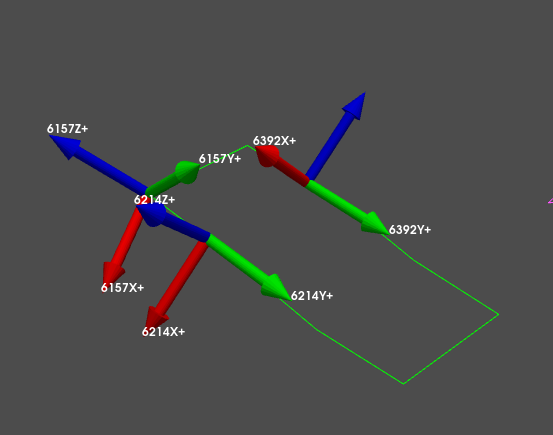{kind=link}
{kind=link}
{kind=link}
We see now that when we plot the shapes on the corrected geometry, it indeed looks like rigid motion.
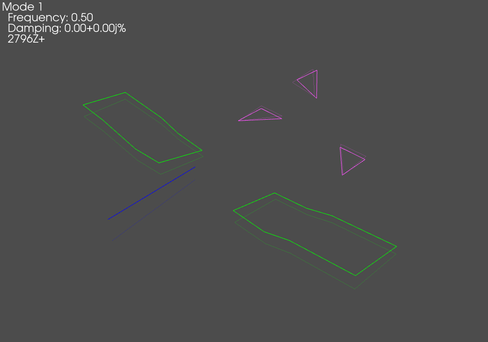{kind=link}
Running a Virtual Experiment: Modal Testing
Now that we have validated test geometry, it is time to perform a modal test. Again, we will simulate this virtually for this test.
The first thing we will do is select drive points to get all of the modes of the system. We will simply select positions here intuitively. We will select wing tips, tail tip, and nose points.
drive_points = sdpy.coordinate_array(string_array=[
'6157Z+',
'11705Z+',
'18787Y+',
'5248Y+',
])
test_geometry.plot_coordinate(drive_points,plot_kwargs=plot_options,
label_dofs=True)
{kind=link}
Now we would like to set up a force for our modal test. Here we will use a random excitation, which will enable us to excite the structure with all drive points simultaneously, which results in a Multiple-Input, Multiple-Output modal test.
We can set up a random force using the
sdpy.generator.random
function. We will provide it the number of forces, the total number of samples,
the time step, and a high-frequency cutoff to ensure that we don’t have
aliasing when we downsample from the integration oversampling factor back to our
test bandwidth.
# Now let's create a force. We will do a random excitation
modal_frames = 30
random_forces = sdpy.generator.random(
drive_points.shape,modal_frames*samples_per_frame,dt=dt,
high_frequency_cutoff=test_bandwidth)
references_modal = sdpy.time_history_array(
np.arange(random_forces.shape[-1])*dt,
random_forces,
drive_points[:,np.newaxis])
# Look at the signal statistics
rms = np.sqrt(np.mean(random_forces**2,axis=-1))
fig,ax = plt.subplots(2,1,num='Random Excitation')
ax[0].plot(np.arange(random_forces.shape[-1])*dt,
random_forces.T)
ax[0].set_ylabel('Force')
ax[0].set_xlabel('Time')
freq = np.fft.rfftfreq(random_forces.shape[-1],dt)
fft = np.fft.rfft(random_forces,axis=-1)
ax[1].plot(freq,abs(fft.T))
ax[1].set_ylabel('Force')
ax[1].set_yscale('log')
ax[1].set_xlabel('Frequency')
Here we see we have random signal with a sharp cutoff in the frequency domain. We have 4 signals, one for each force location.
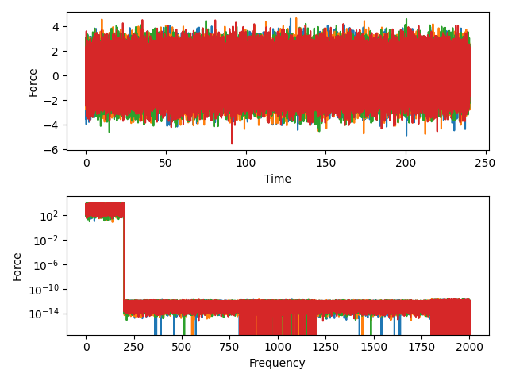{kind=link}
We will again do integration of our test system using the
System.time_integrate
function, and we will then downsample the resulting data to our test bandwidth.
We can again pass the reference and response data into the
sdpy.TransferFunctionArray.from_time_data
function to compute FRFs. Note that because we now have random data, we will
use a window function and apply an overlap.
# Now let's run the modal test
responses_modal = test_system.time_integrate(
references_modal,
{2:test_system.coordinate}) # 2 for acceleration
# Now let's downsample to the actual measurement (removing the 10x integration
# oversample)
responses_sampled = responses_modal.extract_elements(slice(None,None,integration_oversample))
references_sampled = references_modal.extract_elements(slice(None,None,integration_oversample))
# Compute FRFs.
frf_sampled = sdpy.TransferFunctionArray.from_time_data(
references_sampled,responses_sampled,samples_per_frame//integration_oversample,
overlap=0.5,window='hann')
Since we now have a large number of FRFs, it can be
difficult to visualize them all simultaneously, so we will use SDynpy’s
GUIPlot to allow us to quickly
look through all the functions to ensure they look right.
# Now let's use GUIPlot to look at the functions
plotter = sdpy.GUIPlot(frf_sampled)
{kind=link}
Fitting Modes using PolyPy
Now that we have frequency response functions created, we can fit modes to them.
SDynPy has two mode fitters implemented,
PolyPy and
SMAC. Both curve fitters can
be used via graphical user interface or via Python commands if it is desirable
to automate the curve fitting. This example will use the
sdpy.PolyPy_GUI approach.
Running PolyPy
We open the PolyPy GUI by initializing the
sdpy.PolyPy_GUI class
with our frequency response function dataset frf_sampled
# Now that we have FRFs we can go fit modes. We will first look at using
# PolyPy
pm = sdpy.PolyPy_GUI(frf_sampled)
The initial screen shows mode indicator functions, as well as options for computing the initial stabilization diagram. We can see from the shown Complex Mode Indicator function that there are a few instances of closely-spaced modes. We can drag the frequency region on the figure to select the frequency range of interest, set the polynomial orders, and press the button to compute the stabilization curve.
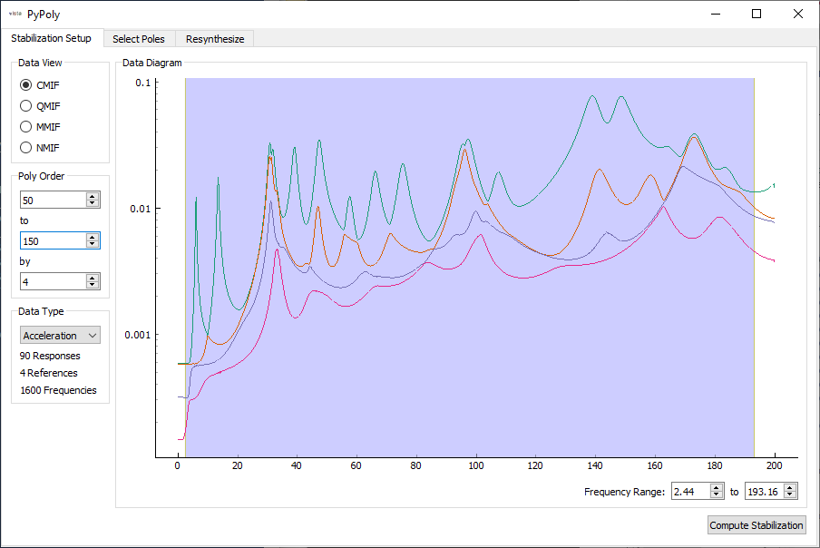{kind=link}
Once the stabilization plot is computed, stable poles can be selected by clicking on them in the stabilization plot. Once all poles are selected, shapes can be computed.
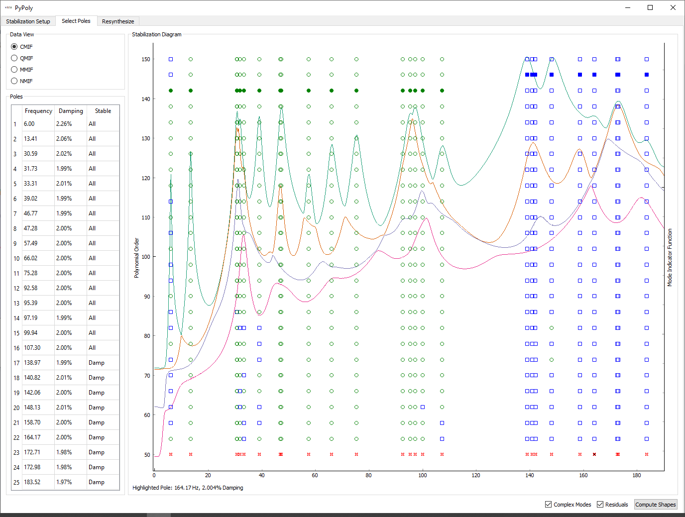{kind=link}
The final tab of the PolyPy implementation allows you to see how well the modes fit to the measured frequency response data. On this page, modes can be saved to a file.
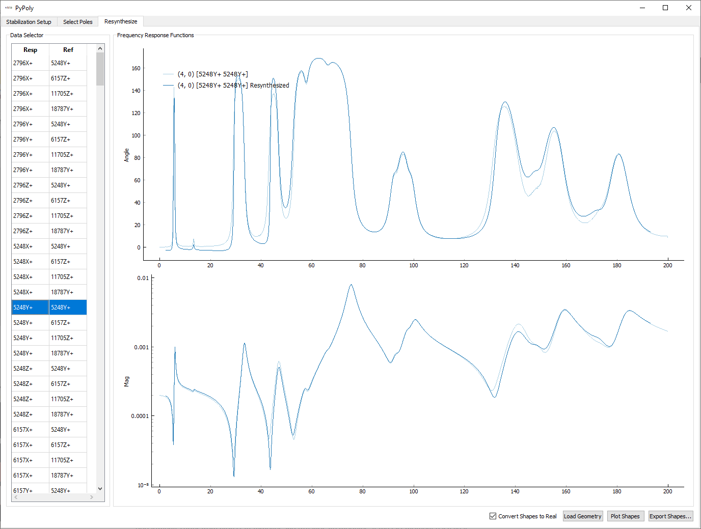{kind=link}
Comparing Test and Finite Element Modes
Once modes are fit in the GUI and saved to disk, we can load them back into our
analysis. We initially compute a Modal Assurance Criterion matrix between the
fit shapes and our finite element shapes to compare the results. We can also
print a shape comparison table obtained by the
sdpy.shape.shape_comparison_table
function.
# In the PolyPy GUI we saved the shapes to disk, so we will now load them.
test_shapes_polypy = sdpy.shape.load('shapes_polypy.npy')
# Let's compare the shapes to the finite element model shapes
mac = sdpy.shape.mac(test_shapes,test_shapes_polypy)
sdpy.correlation.matrix_plot(
mac,text_size=6)
shape_correspondences = np.where(mac > 0.9)
shape_1 = test_shapes_polypy[shape_correspondences[1]]
shape_2 = test_shapes[shape_correspondences[0]]
print(sdpy.shape.shape_comparison_table(shape_1, shape_2,
percent_error_format='{:0.4f}%'))
{kind=link}
Mode Freq 1 (Hz) Freq 2 (Hz) Freq Error Damp 1 Damp 2 Damp Error MAC
1 6.00 6.00 -0.0067% 2.36% 2.00% 17.9820% 100
2 13.40 13.40 0.0218% 2.06% 2.00% 2.9605% 100
3 30.59 30.60 -0.0458% 2.01% 2.00% 0.4512% 100
4 30.73 30.74 -0.0344% 2.01% 2.00% 0.4827% 99
5 31.73 31.73 0.0077% 1.99% 2.00% -0.7148% 100
6 33.31 33.31 0.0025% 1.99% 2.00% -0.3471% 100
7 39.02 39.01 0.0114% 1.98% 2.00% -1.0855% 100
8 46.78 46.77 0.0156% 1.97% 2.00% -1.4382% 99
9 47.28 47.27 0.0189% 2.00% 2.00% -0.0342% 100
10 57.49 57.49 -0.0003% 2.00% 2.00% 0.1664% 100
11 66.02 66.02 0.0012% 2.00% 2.00% -0.0377% 100
12 75.28 75.28 -0.0000% 2.00% 2.00% 0.0906% 100
13 92.58 92.58 -0.0026% 2.00% 2.00% 0.1076% 100
14 95.39 95.40 -0.0078% 2.00% 2.00% 0.1584% 100
15 97.19 97.20 -0.0061% 1.99% 2.00% -0.3016% 100
16 99.94 99.94 -0.0013% 2.00% 2.00% -0.1005% 100
17 107.30 107.30 -0.0018% 2.00% 2.00% 0.1139% 100
18 138.97 138.96 0.0065% 1.99% 2.00% -0.5165% 100
19 140.82 140.81 0.0016% 2.01% 2.00% 0.3194% 100
20 142.06 142.04 0.0097% 2.00% 2.00% 0.2438% 99
21 148.12 148.13 -0.0045% 2.01% 2.00% 0.3527% 100
22 158.70 158.70 0.0005% 2.01% 2.00% 0.2717% 100
23 164.16 164.15 0.0063% 2.00% 2.00% 0.1195% 100
24 172.71 172.68 0.0183% 1.98% 2.00% -0.8317% 98
25 172.99 172.96 0.0171% 1.98% 2.00% -0.8663% 99
26 183.52 183.53 -0.0042% 1.98% 2.00% -1.1180% 100
Another way to compare shapes is to overlay them. This is easily done within
SDynPy using the
sdpy.shape.overlay_shapes
function. The output of this function is a “combined” geometry and “combined”
shape. The nodes, coordinate systems, elements, and tracelines are all combined
into one geometry, and the id values of each of these elements is offset to
avoid conflicts. The shape degrees of freedom are also concatenated and offset
similarly to produce the appropriate shape visualization.
Note that our test shapes might be 180 degrees out of phase with the finite element model shapes, so we will first compute the dot product between the two sets of shapes and flip the sign on any shape where the dot product is negative.
# Compare shapes visually. First we need to get the correct flipping in case
# the shapes are 180 out of phase
shape_phasing = np.sign(np.einsum('ij,ij->i',shape_1.shape_matrix,shape_2.shape_matrix))
shape_1 = shape_1*shape_phasing[:,np.newaxis]
# Plot on the test geometry
test_comparison_geometry,test_comparison_shapes = sdpy.shape.overlay_shapes(
(test_geometry,test_geometry),(shape_1,shape_2),[1,7])
test_comparison_geometry.plot_shape(test_comparison_shapes,plot_options)
# Plot on the fem geometry
fem_comparison_geometry,fem_comparison_shapes = sdpy.shape.overlay_shapes(
(test_geometry,geometry_global),(shape_1,shapes_global[shape_correspondences[0]]),[1,7])
fem_comparison_geometry.plot_shape(fem_comparison_shapes,plot_options,
deformed_opacity=0.5,undeformed_opacity=0)
{kind=link}
{kind=link}
SEREP Expansion
Often times, the “stick” test geometry can be insufficient for communicating
results to test stakeholders, particularly when there are only uniaxial
sensors on the test. Among other things, the System Equivalent Reduction
Expansion Process (SEREP) can be useful for expanding data at test sensors out
to the full finite element space for better visualization. SDynPy makes it
easy to perform SEREP using the
ShapeArray.expand method.
Particularly in this case where we have kept the test geometry node IDs
equivalent to the original finite element node IDs, the expansion bookkeeping
is handled automatically.
We first need to create the set of shapes to use to expand the test shapes.
These will be the finite element shapes in the test bandwidth. We then call
the ShapeArray.expand
method, giving it the test geometry, finite element geometry, and expansion
basis shapes. Note here that the global shapes and global geometry are used
in the expansion. All coordinate transformations between the local test geometry
and global finite element geometry are handled automatically by SDynPy.
# Perform the expansion using the finite element shapes in the bandwidth
expansion_basis = shapes_global[shapes_global.frequency < shape_bandwidth]
expanded_shapes = test_shapes_polypy.expand(test_geometry,geometry_global,
expansion_basis)
# We can then plot the expanded shapes on the original finite element geometry
geometry_global.plot_shape(expanded_shapes,plot_options)
# Or overlay the geometries and shapes
expansion_comparison_geometry,expansion_comparison_shapes = sdpy.shape.overlay_shapes(
(test_geometry,geometry_global),(test_shapes_polypy,expanded_shapes),[1,7])
expansion_comparison_geometry.plot_shape(expansion_comparison_shapes,plot_options,
deformed_opacity=0.5,undeformed_opacity=0)
{kind=link}
{kind=link}